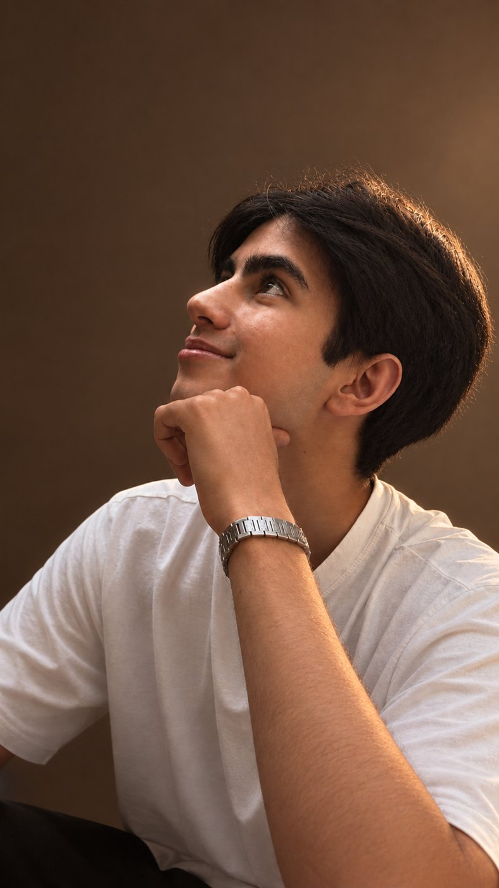

Фотограф
Тигран
Снимаю, сколько себя помню. Сейчас ищу интересные проекты и съёмки и открыт к сотрудничеству.
Написать мне
Я снимаю, сколько себя помню: в детстве папа отдал мне домашние камеры, которые лежали без дела, и до шести лет я бегал с ними и снимал всё подряд.
Всё изменилось в Лондоне летом 2025 года. Я неожиданно стал фотографом для двух групп и однажды спросил, почему просят именно меня. Ответ я помню до сих пор:
«Ты как-то чувствуешь, как сделать кадр, и всегда получается красиво».
Через два месяца у меня появилась своя камера.
Сейчас я в поиске интересных проектов и съёмок и открыт к сотрудничеству.
Новые работы добавляются постепенно.
Готов сотрудничать с интересными проектами. Условия, даты и детали обсудим лично: просто напишите мне в любой из контактов ниже.
К контактам